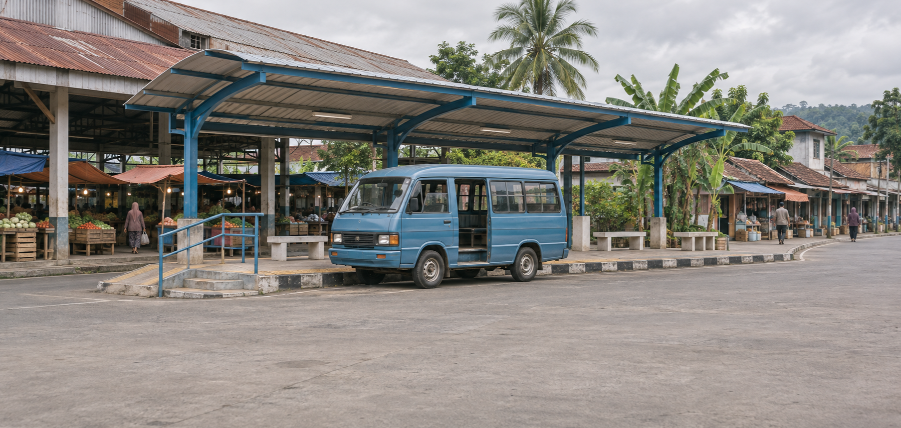
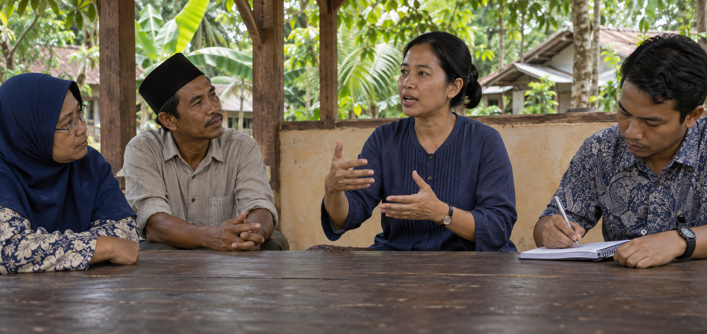

FISIP Universitas Lampung
Program Studi S3
Studi Pembangunan
Mengkaji perubahan sosial, kebijakan publik, dan pembangunan wilayah melalui pendidikan doktoral.
Ilustrasi suasana kampus
Profil program
- Manajemen Pembangunan Regional
- Konsentrasi studi pembangunan regional.
- Manajemen Pembangunan Sosial
- Konsentrasi studi pembangunan sosial.
- Pembangunan Masyarakat Multikultural
- Konsentrasi studi masyarakat multikultural.
Contoh topik riset
Isu pembangunan yang bisa diteliti

Ketimpangan wilayah
Ilustrasi halte angkutan umum
Bagaimana akses angkutan umum memengaruhi kesempatan kerja warga di pinggiran kota?

Tata kelola dan partisipasi
Ilustrasi musyawarah warga
Bagaimana usulan warga dipertimbangkan ketika pemerintah daerah menentukan prioritas pembangunan?
Perjalanan studi doktoral
Mulai dari masalah pembangunan yang ingin Anda pahami. Gambaran ini mengikuti proses penelitian dari gagasan awal hingga disertasi.
Rumuskan pertanyaan
Tentukan masalah dan telusuri literatur untuk menemukan pertanyaan yang dapat diteliti.
Rancang dan jalankan penelitian
Pilih metode yang sesuai, pertimbangkan etika penelitian, lalu kumpulkan dan analisis bukti.
Susun disertasi
Jelaskan temuan, hubungkan dengan literatur, dan perjelas kontribusi penelitian Anda.
Dosen dan kepakaran
Cari calon pembimbing yang bidang kajiannya sesuai dengan pertanyaan riset Anda
- Topik
- Cocokkan isu yang Anda teliti dengan bidang kajian dosen.
- Metode
- Cari pengalaman dengan pendekatan yang ingin Anda gunakan.
- Konteks
- Perhatikan wilayah, populasi, atau kebijakan yang pernah diteliti.
- Publikasi
- Baca karya yang relevan untuk memahami fokus riset dosen.
Persiapan sebelum mendaftar
Mulai dari pertanyaan riset, lalu cocokkan minat Anda dengan kepakaran dosen dan ketentuan penerimaan.
Bagaimana merumuskan minat riset?
Tulis singkat masalah yang ingin Anda teliti, siapa yang terdampak, dan pertanyaan yang ingin Anda jawab.
Bagaimana menelusuri kepakaran dosen?
Catat kata kunci topik dan metode Anda. Gunakan keduanya untuk menelusuri bidang kajian dan publikasi dosen.
Ketentuan apa yang perlu saya periksa?
Lihat persyaratan, dokumen, jadwal, dan prosedur untuk periode pendaftaran yang Anda tuju.
Penerimaan
Periksa ketentuan sebelum mendaftar
Buka kanal penerimaan Universitas Lampung. Pilih jenjang doktor dan Program Studi S3 Studi Pembangunan, lalu periksa persyaratan, jadwal, kelengkapan dokumen, dan prosedur untuk periode yang Anda tuju.
Buka Kanal Penerimaan Universitas LampungKontak untuk studi dan penerimaan
Untuk kurikulum atau kepakaran dosen, tujukan pertanyaan kepada pengelola Program Studi S3 Studi Pembangunan. Kontak Program Studi
Email program: studi.pembangunan@fisip.unila.ac.id
Gedung F Pascasarjana Fakultas Ilmu Sosial dan Ilmu Politik Universitas Lampung, Jl. Prof. Dr. Sumantri Brojonegoro No. 1, Bandar Lampung 35145.
Untuk jadwal, dokumen, atau prosedur pendaftaran, gunakan kanal penerimaan Universitas Lampung.
Lihat Informasi Penerimaan